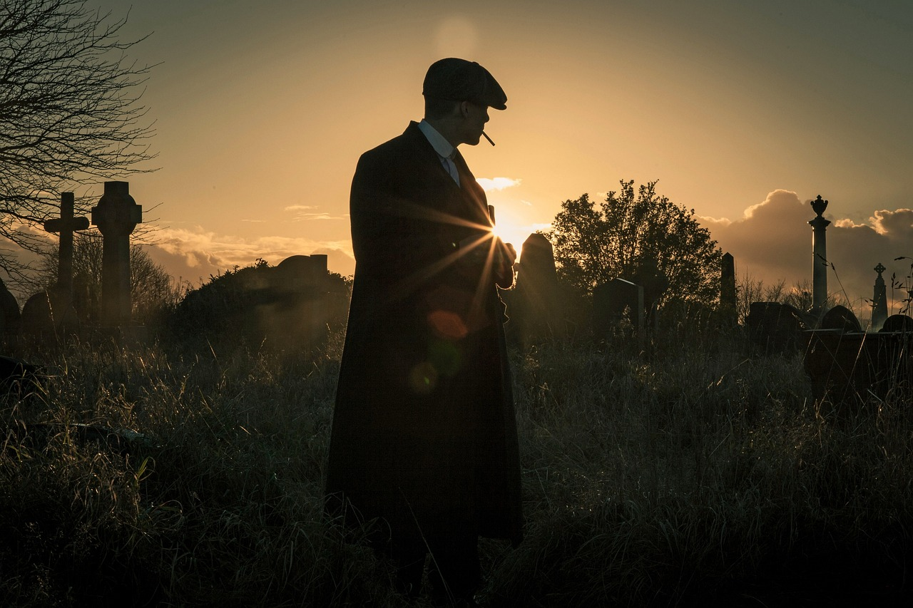

Peaky Blinders é uma série de televisão britânica que segue a família Shelby, uma gangue criminosa em Birmingham, logo após a Primeira Guerra Mundial. A série é conhecida por sua narrativa envolvente, personagens complexos e uma estética visual marcante.
A série se passa em Birmingham, Inglaterra, após a Primeira Guerra Mundial e segue a família Shelby, que lidera uma gangue chamada Peaky Blinders. O protagonista, Thomas Shelby, é um ex-soldado que luta para expandir os negócios da família.
Famosa por sua cinematografia estilizada e trilha sonora moderna, a série combina músicas contemporâneas com o cenário histórico, criando um contraste fascinante.
A série recebeu aclamação crítica e ganhou vários prêmios, incluindo BAFTAs, tornando-se um ícone cultural.
